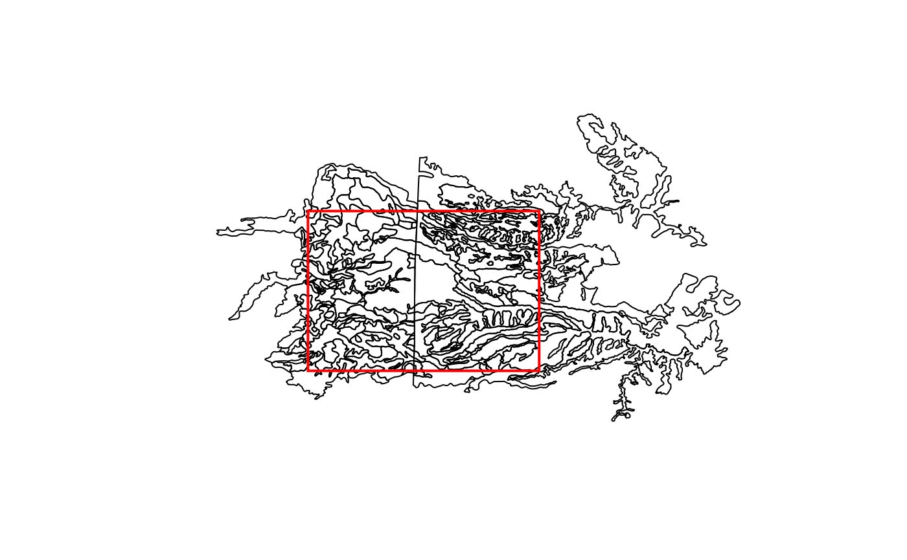

Fetch map unit geometry from the SDA website by WGS84 bounding box. There is a limit on the amount of data returned as serialized JSON (~32Mb) and a total record limit of 100,000.
mapunit_geom_by_ll_bbox(bbox, source = "sda")
| bbox | a bounding box in WGS coordinates |
|---|---|
| source | the source database, currently limited to soil data access (SDA) |
A SpatialPolygonsDataFrame of map unit polygons, in WGS84 (long,lat) coordinates.
The SDA website can be found at https://sdmdataaccess.nrcs.usda.gov. See examples for bounding box formatting.
SDA does not return the spatial intersection of map unit polygons and bounding box. Rather, just those polygons that are completely within the bounding box / overlap with the bbox. This function requires the 'rgdal' package.
Dylan E. Beaudette
## fetch map unit geometry from a bounding-box: # # +------------- (-120.41, 38.70) # | | # | | # (-120.54, 38.61) --------------+ # # \donttest{ if(requireNamespace("curl") & curl::has_internet() & require(sp) & require(rgdal)) { # basic usage b <- c(-120.54,38.61,-120.41,38.70) x <- try(mapunit_geom_by_ll_bbox(b)) # about 20 seconds if(!inherits(x,'try-error')) { # note that the returned geometry is everything overlapping the bbox # and not an intersection... why? plot(x) rect(b[1], b[2], b[3], b[4], border='red', lwd=2) # get map unit data for matching map unit keys in.statement <- format_SQL_in_statement(unique(x$mukey)) q <- paste("SELECT mukey, muname FROM mapunit WHERE mukey IN ", in.statement, sep="") res <- SDA_query(q) #inspect head(res) } else { message('could not download XML result from SDA') } }#>#> #> #> #> #> #> #> #> #> #> #> #>#> OGR data source with driver: GML #> Source: "C:\Users\runneradmin\AppData\Local\Temp\RtmpoD5APT\file3982df17f6a.gml", layer: "mapunitpoly" #> with 197 features #> It has 8 fields#>#> mukey muname #> 1 462183 Aiken loam, 2 to 9 percent slopes, C Lower Montane #> 2 462188 Aiken cobbly loam, 3 to 30 percent slopes #> 3 462193 Argonaut loam, seeped variant #> 4 462215 Chaix very rocky coarse sandy loam, 50 to 70 percent slopes #> 5 462219 Cohasset loam, summits, 2 to 20 percent slopes, dry #> 6 462220 Cohasset loam, shoulders, 3 to 20 percent slopes, dry# }